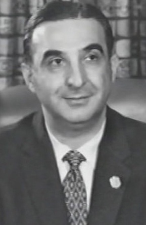
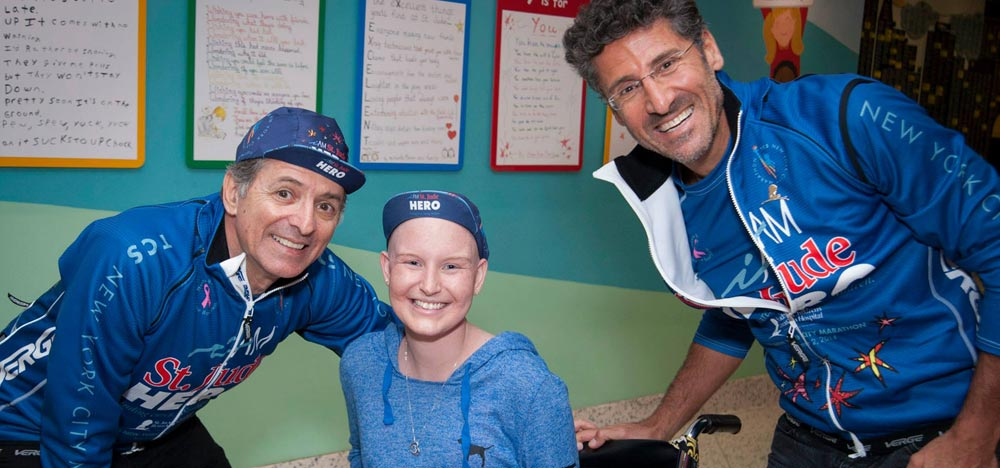
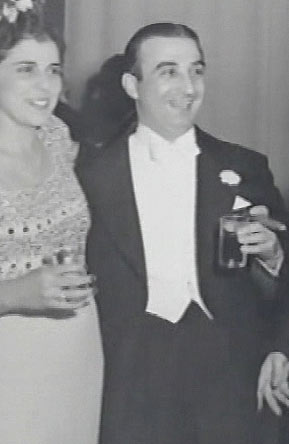
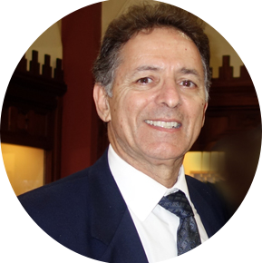
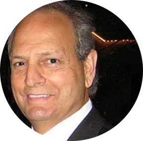
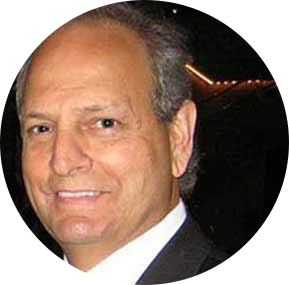
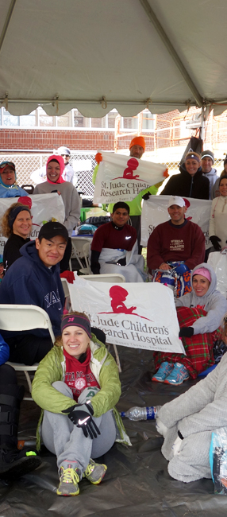

“ To Love, Honor, Respect and Empower
the Lives of the Suffering, Hopeless and Forgotten. ”
The Anthony R. Abraham Foundation
Our Purpose
EMPOWER LIVES AND
FOSTER POSITIVE CHANGE

Anthony R. Abraham
- Chairman & Founder -

(Left) Thomas G. Abraham
- Chairman of the Board -
(Right) Maxime Chaya
- Lebanese Superstar -
When it comes to enhancing the quality of life, every person’s efforts matter. That’s what Anthony and Genevieve Abraham visioned when they started
The Anthony R. Abraham Foundation.

Genevieve Abraham & Anthony R. Abraham
The Vision
PROVIDE SERVICES THAT HELP
Ensure that no child is denied medical treatment
due to a lack of insurance. Provide education that breaks barriers. Guarantee research into the cure
of catastrophic diseases. Help raise the quality of life for those in need. Help people around the world
to become self-productive.
due to a lack of insurance. Provide education that breaks barriers. Guarantee research into the cure
of catastrophic diseases. Help raise the quality of life for those in need. Help people around the world
to become self-productive.
Who We Are
A LEGACY OF CHARITY



Thomas G. Abraham
- Chairman of the Board -
Thomas Abraham currently serves as President/Partner in the following family enterprises AA Miami Group, Ltd., TATM Tampa Group, Ltd., ANAB and A.R.A. Group. He has served with distinction for more than thirty years in senior executive roles as President, officer and partner in numerous successful family-owned and operated businesses founded by Anthony R. Abraham in the automotive and insurance industries including, Anthony Abraham Chevrolet Co., Ltd., Miami; Anthony Abraham Oldsmobile Inc., Miami; Anthony Abraham Buick-GMC Truck, Inc., Miami; Abraham Chevrolet Company, Inc. Tampa; American Risk Assurance Company; Florida Leasing & Rental Co., Inc; Florida Life Insurance Company, and Coral Premium Finance Co., Inc.
Anthony R. Abraham and his late wife Genevieve devoted their lives to helping others through the Anthony R. Abraham Foundation founded in 1976. Thomas G. Abraham currently serves as Chairman and has made numerous trips to Lebanon in support of the foundation’s work in the past decades. The foundation has provided millions to numerous worthy causes, for over 30 years in Lebanon. Among those organizations in Lebanon are The Genevieve Abraham School of Nursing, The Lebanese Hospital-Geitawi, The School for the Blind and Deaf, The Spastic Center, and The Crèche St. Vincent de Paul, Lebanese American University, The Lebanese Order of the Night s of Malta, Beirut Marathon, The Rene Moawad Foundation, Little Sisters of Nazareth, Catholic Near East Welfare Association, and many others.
Mr. Thomas G. Abraham also serves as a member of the Board of these organizations: Camillus Health and House Concern, CityYear, Emeritus Board Member for St. Jude Children’s Research Hospital, the Lebanese American University, APEAL, SEAL, Rene Moawad Foundation, and Beirut Marathon Association.
While achieving national recognition as an innovator in the automotive dealer industry, Mr. Abraham also achieved widespread acclaim for his vision and cultural commitment to contemporary artists in Founding Miami’s not-for-profit StarArt Foundation which has provided extensive support for a multitude of civic events and organizations including: Grammy’s MusiCares Foundation, Panther Poster Project for the Miami Herald charities, South Florida Botero Sculpture exhibit, The America’s Cup, Swatch Watch Summit of the Americas, Hurricane Relief Effort, American Airlines Miami Mile, Miracle Rock, and The MOVADO Watch for the Benefit of St. Jude Children’s Research Hospital and UNICEF, among numerous other initiatives.
Mr. Abraham was born in Beirut, Lebanon on January 6, 1952, and is a life-long resident of the Miami area. He attended the University of Miami, and University of Denver in the 1970’s prior to embarking upon his career in the automotive industry and was instrumental in the creation of a number of startup’s that dealt with the technology industry. He is committed to continuing to search out those endeavors that will help empower those in need.
Nancy Bailey
- Chairman, Nancy Bailey & Associates Vice Chairman, Beanstalk -
In 2010, Nancy Bailey & Associates was acquired by Omnicom Group (NYSE:OMC) and merged with Beanstalk to form one of the most experienced, successful and innovative licensing agencies in the world.
Nancy’s early career began in the Advertising and Promotions Department at The Procter & Gamble Company and at two New York advertising agencies. She held marketing management positions at Royal Castle and Burger King Corporation where she worked for 7 years as Director of Advertising, Kids Marketing and Licensing.
In May 2010, Nancy was awarded the Ellis Island Medal of Honor to commemorate her outstanding achievements and dedicated leadership.
Nancy graduated from The University of Miami with a Bachelor of Science in Business Administration.
Nick Daniels
Mr. Daniels is a member of the notable international legal fraternity Phi Delta Phi. His other memberships include the Estate Planning Council of Greater Miami (1975); the Florida Bar (Member, Tax Section); American Bar Association (Member, Tax Section); and the Florida Bar Board of Legal Specialization and Education.
Norma Jean Abraham
Norma Jean has received numerous awards over the years. She has been named an Honorary Trustee by Miami Light Project, a “Woman of Valor” by Children’s Home Society, and has been specially honored by Alonzo Mourning Charities with the “Helping Hands” award at Zo’s Summer Groove. She has received Bank of America’s “Neighborhood Excellence Initiative Award” for being a local hero, and “The Ethel & W. George Kennedy Family Foundation Volunteerism Award” at The American Red Cross of Miami Dade’s Spectrum Awards for all of her continuous hands-on work in our community. She has also received Barry University’s Celebration of the Human Spirit “Laudare Medal” for extraordinary service to the community as a champion for families and children through support of education, and she was also recognized in 2011 as a Woman of Distinction and Caring by the Plaza Health Network.
To say that Norma Jean is active in the community would be an understatement. She has just wrapped up her four-year stretch as co-chair of Big Brothers Big Sisters annual “Miracle Makers” Fashion Show while continuing on to her third year as chair of Zoo Miami’s “Feast With The Beasts” event. She is on the committee of many other charitable events throughout the year, and continues to maintain her role as part of Honey Shine Mentoring Programs annual “Hat’s Off” Luncheon.
Norma Jean also sits on the Board of Directors of the Zoological Society of Florida, is a long time member of the Women’s Committee of Big Brothers Big Sisters and has served on the Board of Honey Shine Mentoring Program since its inception. She has dedicated the past nine years to helping teens and mentoring young girls. She continues to devote weeks of her time to Honey Shine Mentoring Program’s summer camp, not to mention her participation in the bi-monthly workshops! “Everyone has a purpose in life,” she adds, “I’m blessed to have found mine.” She looks forward to continuing to serve the South Florida community for years to come—with her smart, sweet, Schnauzer pup “Snugs” at her side.
Tom Malouf
Contact Us
AND MAKE A CHANGE

Scroll to the Top